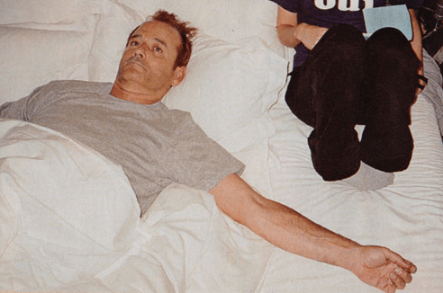

Destination
Henry Miller:
One’s destination is never a place, but a new way of seeing things.
Henry Miller:
One’s destination is never a place, but a new way of seeing things.

Аркадий Володось исполняет симфоническую поэму "Пляска Смерти" Сен-Санса в транскрипции для фортепиано Владимира Горовица.


Прочитал отличную книгу по юзабилити. Книга небольшая, написана просто и понятно, и я осмелюсь ее рекомендовать всем, кому интересна данная тематика.
Совершенно какая-то нереально кайфовая детская игруха! Особенно, если на французском слушать :) И еще одна.

Цветные фотки c луны. via.

Хорошее кино.